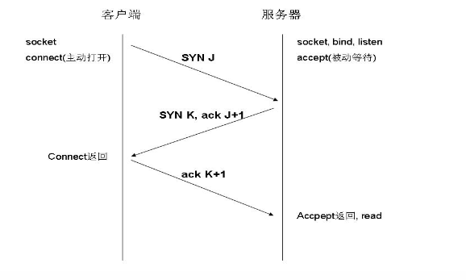
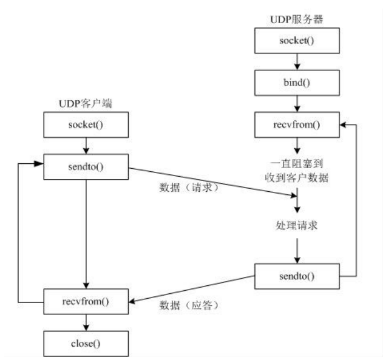
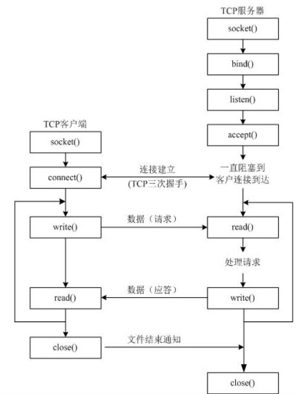

UDP协议
UDP：用户数据报协议，不可靠性，只是把应用程序传给IP层数据报送出去，但是不能保证他们是否能到达目的地，传输数据报钱不用再客户端和服务器之间建立连接，并且没有超时重发机制，所以传输速度快。
UDP特点
-安全性差不稳定，没有顺序， 大小限制64KB内 -速度快
TCP协议
tcp通信，再通讯之前，一定要先建立相关链接，才能发送数据
三次握手

第一次握手：主机A发送位码为syn＝1,随机产生seq number=1234567的数据包到服务器，主机B由SYN=1知道，A要求建立联机；
第二次握手：主机B收到请求后要确认联机信息，向A发送ack number=(主机A的seq+1),syn=1,ack=1,随机产生seq=7654321的包
第三次握手：主机A收到后检查ack number是否正确，即第一次发送的seq number+1,以及位码ack是否为1，若正确，主机A会再发送ack number=(主机B的seq+1),ack=1，主机B收到后确认seq值与ack=1则连接建立成功。
完成三次握手，主机A与主机B开始传送数据。
标志控制
ACK：确认标志
SYN：同步标志
FIN：结束标志
TCP特点
- 安全性高，稳定性好，有序
- 速度相对较慢
什么是Socket
socket(简称 套接字)是一个网络通信的端点，它能实现不同主机间的进程通信，我们网络上各种各样大多数都是基于Socket来完成的通讯
网络中进程之间如何通讯呢
首要解决的问题是如何确定你要和对方电脑上哪个进程进行通讯
利用协议，IP地址，端口标识网络的进程，然后通着这些标识进行通讯
socket--UDP网络通讯
使用socket创建UDP通讯的过程很简单，如下图：


1.创建套接字
2.绑定
3.接收消息
4.回复消息
5.关闭套接字
import socket
# 1.创建套接字
udp_socket=socket.socket(socket.AF_INET,socket.SOCK_DGRAM)
# 2.绑定端口
udp_socket.bind(('',7852))
# 3.接收消息
data,addr=udp_socket.recvfrom(1024)
print('>>：'+(data.decode('utf-8')))
# 4.返回消息
udp_socket.sendto(senInput.encode('utf-8'),addr)
# 5.关闭套接字
udp_socket.close()
客户端
1.创建套接字
2.发送数据
3.接收
4.关闭套接字
import socket
# 1.创建套接字
udp_socket=socket.socket(socket.AF_INET,socket.SOCK_DGRAM)
# 2.发送消息
data = "你吃了吗"
udp_socket.sendto(data.encode('utf-8'),('192.168.194.1',7852))
# 3.接收服务器返回的消息
data,addr=udp_socket.recvfrom(1024)
print(data.decode('utf-8'))
# 4.关闭套接字
udp_socket.close()
Socket--TCP网络通讯
TCP通讯过程

服务端
1.创建套接字
2.绑定
3.监听
4.接收
5.关闭套接字
import socket
# 1.创建
tcp_socket=socket.socket(socket.AF_INET,socket.SOCK_STREAM)
# 2.bind()绑定
tcp_socket.bind(('',7852))
# 3.listen()监听
tcp_socket.listen()
# 4.accept()接受数据
s,addr=tcp_socket.accept()
data=s.recv(1024)
print(data.decode('utf-8'))
# 5.关闭
s.close()
tcp_socket.close()
客户端
1.创建
2.connect()连接
3.发送
4.关闭套接字
import socket
# 1.创建套接字
tcp_cocket=socket.socket(socket.AF_INET,socket.SOCK_STREAM)
# 2.建立连接
tcp_cocket.connect(('192.168.194.1',7852))
# 3.发送数据
tcp_cocket.send('吃了吗'.encode('utf-8'))
# 4.关闭套接字
tcp_cocket.close()
使用Socket--udp实现简单的聊天软件
服务端
import socket
from threading import Thread
# 定义处理接受消息的线程
def recfunc():
global addr
data,addr=s_udp.recvfrom(1024)
print('>>:'+(data.decode('utf-8')))
# 定义处理发送消息的线程
def sendfunc():
dataInput=input('<<:')
s_udp.sendto(dataInput.encode('utf-8'),addr)
s_udp = None
addr =None
# 定义主函数功能
def min():
global s_udp
s_udp=socket.socket(socket.AF_INET,socket.SOCK_DGRAM)
s_udp.bind(('',8752))
while True:
hr = Thread(target=recfunc())
hs = Thread(target=sendfunc())
hr.start()
hs.start()
hr.join()
hs.join()
s_udp.close()
min()
客户端
import socket
from threading import Thread
# 1.收数据，打印
def recData():
while True:
data,addr=udpsocket.recvfrom(1024)
print('>>'+(data.decode('utf-8')))
# 2.发数据
def sendData():
while Thread:
senInput=input('<<：')
udpsocket.sendto(senInput.encode('utf-8'),(destIp,destPort))
udpsocket = None
destIp = ''
destPort = 0
def min():
global udpsocket
global destIp
global destPort
destIp = input('对方的IP：')
destPort=int(input('对方的端口号：'))
udpsocket = socket.socket(socket.AF_INET,socket.SOCK_DGRAM)
udpsocket.bind(('',7853))
tr = Thread(target=recData)
th = Thread(target=sendData)
tr.start()
th.start()
tr.join()
th.join()
udpsocket.close()
min()